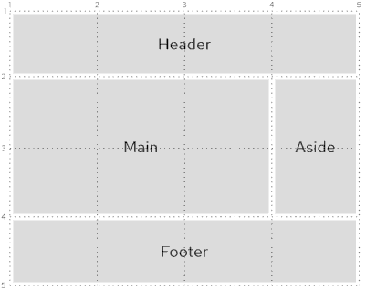

What is Grid?
Grid is a method to arrange web page elements in two dimensions.
Advantages over Alternatives
Before Grid was added to CSS, web developers had to lay out pages using other techniques, including tables and floats. However, these are not the best approaches. Using HTML tables is not semantically correct since it uses HTML elements to style pages instead of using CSS. Conversely, using floats is also problematic as floats were intended for positioning images on a page and allowing text to flow around them. As a result, using floats for page layout is challenging due to their number of quirks. Grid provides an easier way to style pages while keeping the HTML and CSS separate.
Grid versus Flexbox
In addition to Grid, there is also Flexbox for layout. Flexbox is a one-dimensional layout system, whereas Grid is a two-dimensional layout system. Moreover, Grid is based on the layout that the content is then placed into, while Flexbox is based on the content that then determines the layout. As a result, Grid is more suitable for larger sections of pages and Flexbox is more suitable for smaller sections of pages.
Browser Support
Currently, Grid is supported by most major browsers. However, Internet Explorer only supports an older version of Grid using a prefix, and Opera Mini does not support it.